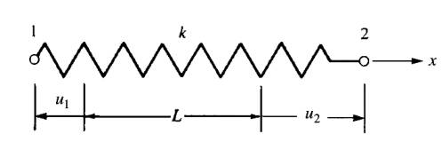

Materyel Mekaniği - 6
Direk Direngenlik Metotu (Direct Stiffness Method)
Direngenlik metotunu anlamak icin direngenlik matrisi kavramini islemek gerekir. Bu konuya biraz [2]'de degindik. Bir oge grubunun, sistemin direngenlik matrisi dugumsel yer degisimler $d$ ile dugumsel kuvvetler $F$'yi ilintilendiren bir $K$ matrisidir, oyle ki [1, sf. 34]
$$ F = K d $$
esitligi gecerlidir. Alttaki gibi bir sistem olsun,

Sistemde bir yay goruluyor, bu yay uzerinde iki tane dugum noktasi sectik, onlari takip edecegiz, dugum 1 ve 2. Dugumlerdeki yer degisimler $u_1,u_2$ olsun, yaydaki toplam degisimo $\delta = u_1 - u_2$. Uygulanan kuvvet $T$ ise bir sabit $k$ uzerinden $T = k \delta$ esitligi ortaya atilabilir.
Direngenlik matrisine gelirsek, sistemdeki tum yer degisimleri soyle gosterebiliriz,

Sag ucta yay $T$ kuvveti ile cekiliyorsa, bu durum sol ucta $-T$ tepkisel kuvvete sebep olur. Ayrica $u_1$'in sol yonu isaret ettigine dikkat, cunku yer degisimin yonu pozitif yonun tersinde, yaydaki takip edilen nokta baslangic aninin sol tarafinda kaliyor, bu sebeple yon eksi.
$$ f_{1x} = -T, \quad f_{2x} = T $$
Hepsini bir araya koyarsak
$$ T = -f_{1x} = k (u_2 - u_1) $$
$$ T = f_{2x} = k (u_2 - u_1) $$
Yani
$$ f_{1x} = k(u_1 - u_2) $$
$$ f_{2x} = k(u_2 - u_1) $$
Matris formunu kullanarak,
$$ \left[\begin{array}{ccc} f_{1x} \\ f_{2x} \end{array}\right] = \left[\begin{array}{ccc} k & -k \\ -k & k \end{array}\right] \left[\begin{array}{ccc} u_1 \\ u_2 \end{array}\right] $$
Ifadenin ortasindaki 2 x 2 matrisi direngenlik matrisidir.
Ustdüşüm (Superposition)
Eger iki tane yay sistemini birbiriyle bagli olarak islemek istersek [1, sf. 38], ustdusum teknigi kullanilabilir. Ustdusum basit bir matris toplami ile yapilabiliyor. Alttaki ornege bakalim,

Iki yay var, birbirlerine baglilar, iki yayin sabitleri $k_1$, $k_2$ olsun. Her iki yayin direngenlik matrisi ayri ayri (tekabul eden yer degisim degiskenleri matris kolon etiketi olarak gosteriliyor),
$$ k^{(1)} = \begin{array}{cc} & \begin{array}{cc} u_1 & u_3 \end{array} \\ & \left[ \begin{array}{cc} k_1 & -k_1 \\ -k_1 & k_1 \end{array} \right] \end{array} \qquad k^{(2)} = \begin{array}{cc} & \begin{array}{cc} u_3 & u_2 \end{array} \\ & \left[ \begin{array}{cc} k_2 & -k_2 \\ -k_2 & k_2 \end{array} \right] \end{array} $$
Iki yay sistemini tek sistem haline getirmek aslinda basit bir matris toplamindan ibaret fakat bu matrisin kolonlari ayni degiskenlere tekabul ediyor olmali. O zaman her iki 2 x 2 matrisi genisletip 3 x 3 matrisi haline getirirsek, degisken etiketlerini esitlersek bu yeni iki matrisi toplayabiliriz.
$$ k^{(1)} = \begin{array}{cc} & \begin{array}{ccc} u_1 & u_2 & u_3 \end{array} \\ & \left[ \begin{array}{ccc} k_1 & 0 & -k_1 \\ 0 & 0 & 0 \\ -k_1 & 0 & k_1 \end{array} \right] \end{array} \qquad k^{(2)} = \begin{array}{cc} & \begin{array}{ccc} u_1 & u_2 & u_3 \end{array} \\ & \left[ \begin{array}{ccc} 0 & 0 & 0 \\ 0 & k_2 & -k_2 \\ 0 & -k_2 & k_2 \end{array} \right] \end{array} \qquad $$
Dikkat edilirse meaela ilk matrisin $u_2$ kolonu tamamen sifir cunku 2 x 2 halindeki $k^{(1)}$ matrisinde bu degisken yoktu. Yeni genisletilmis matrise gecerken olmayan degiskenin kolonunu sifirlarsak aslinda ayni matrisi elde etmis oluruz.
Artik iki matrisi toplayaabiliriz,
$$ \left[\begin{array}{ccc} k_1 & 0 & -k_1 \\ 0 & k_2 & -k_2 \\ -k_1 & -k_2 & k_1+k_2 \end{array}\right] \left[\begin{array}{c} u_1 \\ u_2 \\ u_3 \end{array}\right] = \left[\begin{array}{c} F_{1x} \\ F_{2x} \\ F_{3x} \end{array}\right] $$
Sinir Sartlari (Boundary Conditions)
[devam edecek]
Kaynaklar
[1] Logan, A First Course in the Finite Element Method
[2] Bayramlı, Hesapsal Bilim, Ders 1-8
Yukarı